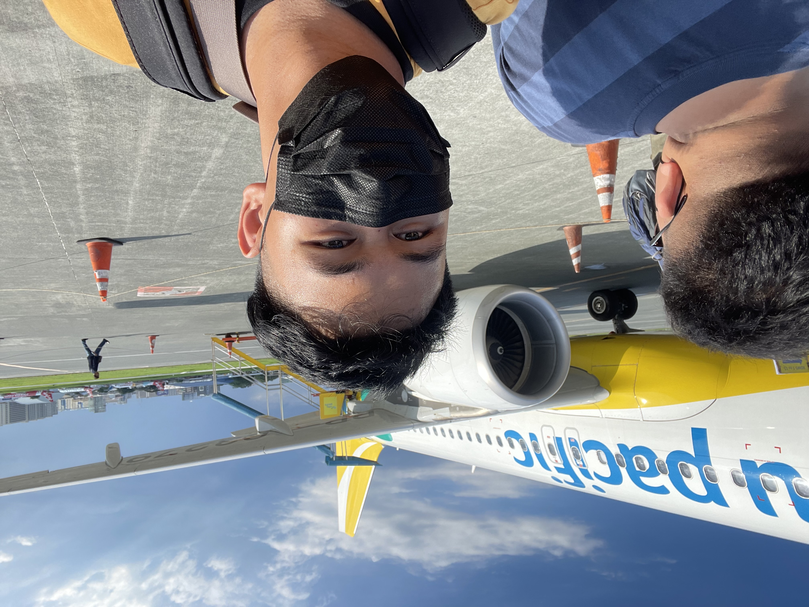
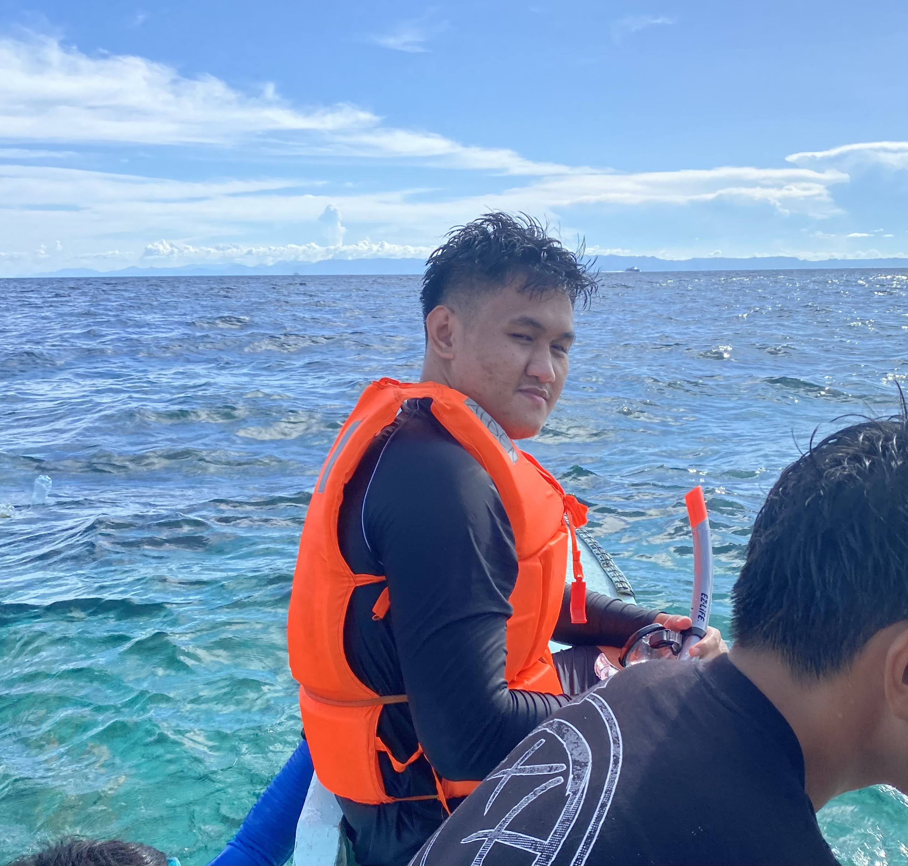
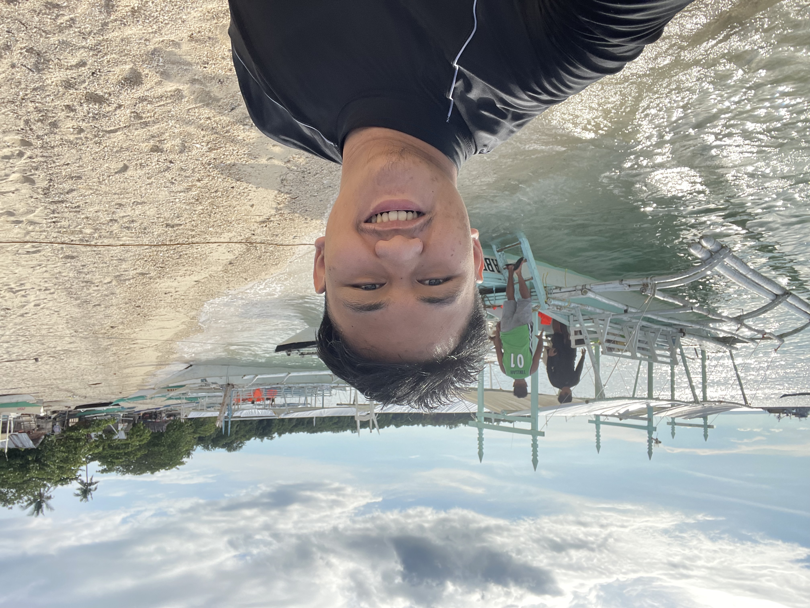
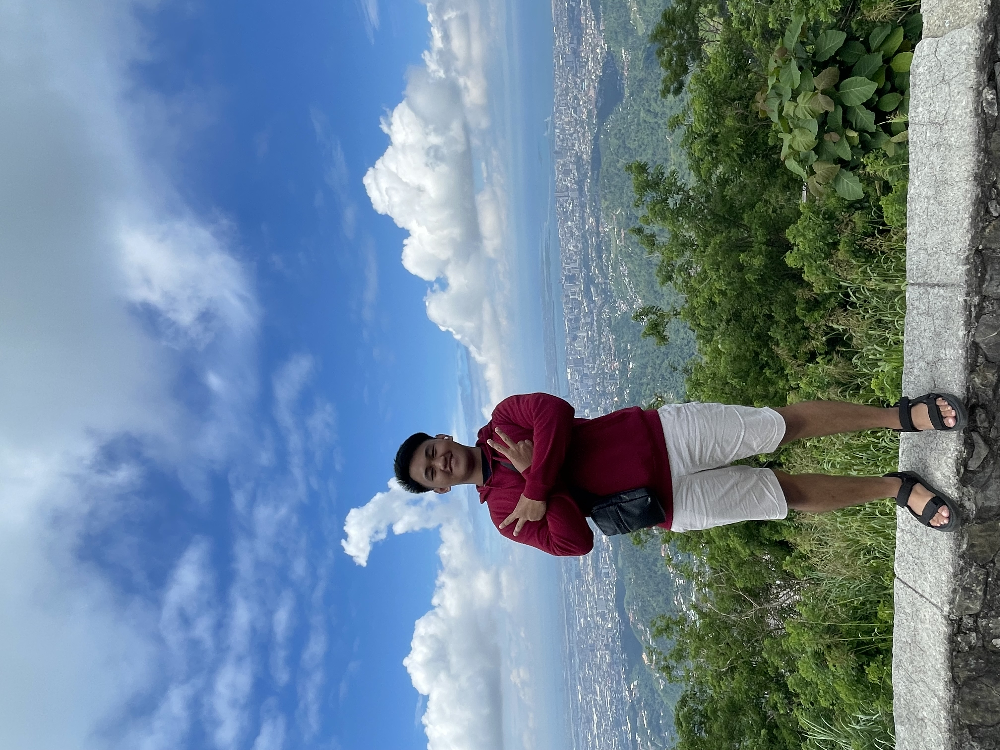
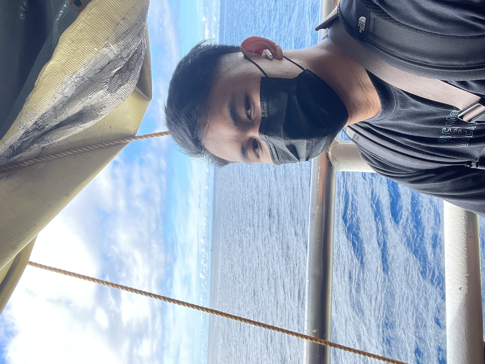

<hr>
<h1>"Traveling is like changing the lens through which we view life. It helps us to see things from a different
    perspective, and gain a better understanding of the world and ourselves."</h1>
<hr>






<hr>
<a href="../index.html">Home</a>
<br>
<a href="./hobbies.html">Back</a>
<footer>© Emmanuel Jude Salvador. All rights reserved.</footer>